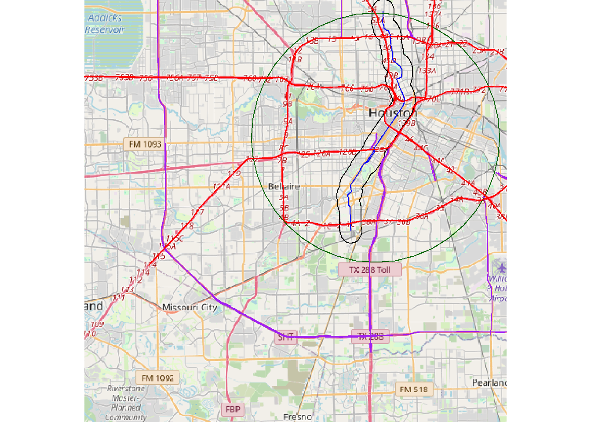
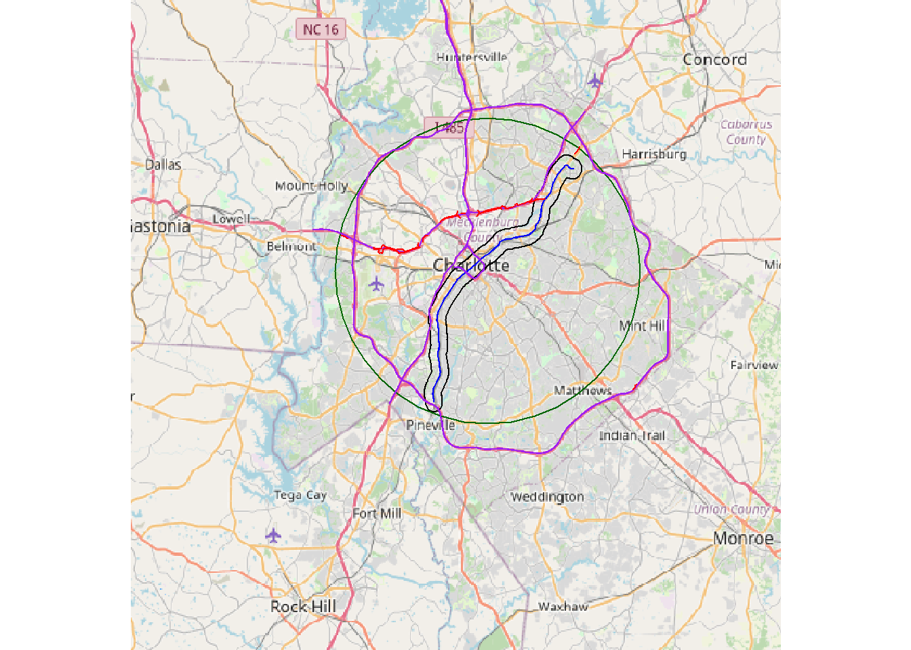
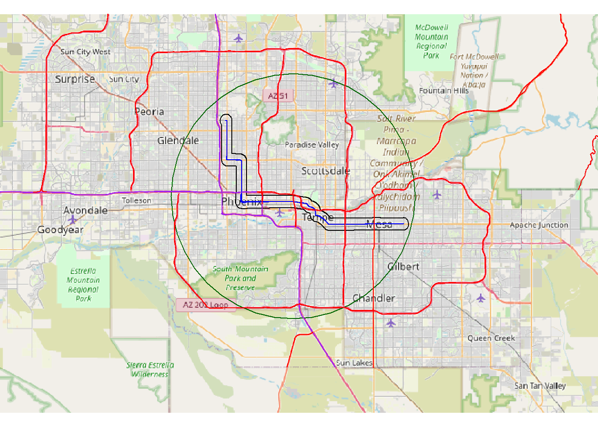
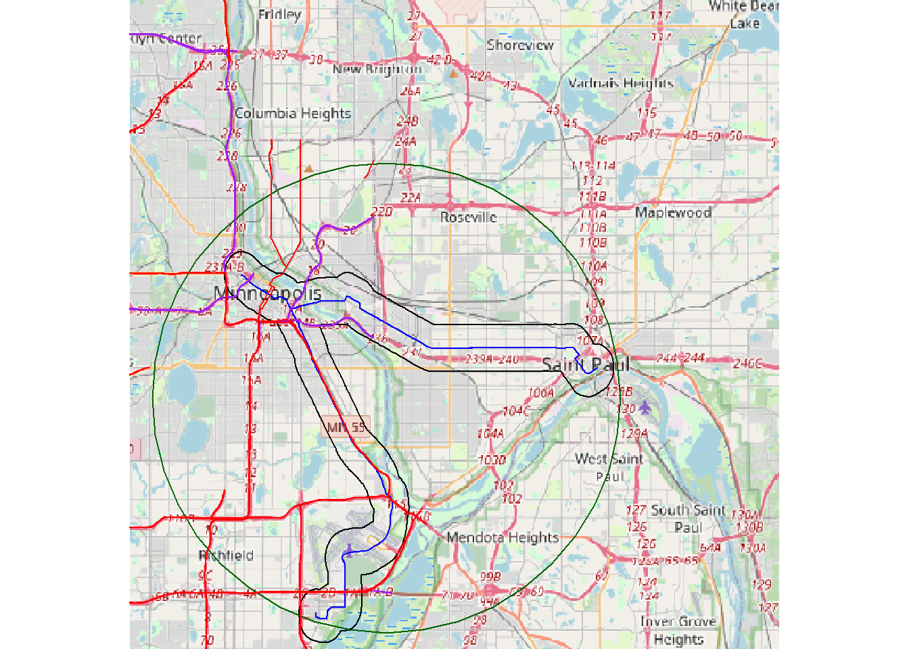

── Attaching core tidyverse packages ──────────────────────── tidyverse 2.0.0 ──
✔ dplyr 1.1.1 ✔ readr 2.1.4
✔ forcats 1.0.0 ✔ stringr 1.5.0
✔ ggplot2 3.5.0 ✔ tibble 3.2.1
✔ lubridate 1.9.3 ✔ tidyr 1.3.0
✔ purrr 1.0.1
── Conflicts ────────────────────────────────────────── tidyverse_conflicts() ──
✖ dplyr::filter() masks stats::filter()
✖ dplyr::lag() masks stats::lag()
ℹ Use the conflicted package (<http://conflicted.r-lib.org/>) to force all conflicts to become errors
library("terra")
terra 1.7.46
Attaching package: 'terra'
The following object is masked from 'package:tidyr':
extract
library("maptiles")
Make shapefile for Houston
#city centroidcities<-read.csv("allcities_latlon.csv")#get coordinate for citydf<-cities |>filter(Address=="Houston, TX") |>select(lon, lat)#convert coordinates into a point shapefilex <-vect(df, geom=c("lon", "lat"), crs="+proj=longlat +ellps=WGS84 +datum=WGS84 +no_defs ")#light raile route shapefileTransit_Map_GEO <-vect("G:/Shared drives/2022 FIRE-SA/ARCHIVED - SUMMER INTERNSHIP/Light Rail/DATA/National_Transit_Map_Routes/National_Transit_Map_Routes.shp")trans <-subset(Transit_Map_GEO, Transit_Map_GEO$route_long =="METRORAIL RED LINE")char_lr<-aggregate(trans, dissolve=TRUE)lr_project<-project(char_lr, "+proj=longlat +ellps=WGS84 +datum=WGS84 +no_defs ")#make 10 km buffer around light rail centroidlrc<-centroids(lr_project, inside=FALSE)lrc_buff<-buffer(lrc, width =10000)#make 1 km buffer around light rail route #lr_buffer<-terra::buffer(lr_project, width = 1000)#writeVector(lr_buffer, "Houston Shapefiles/lr_1km_buff", overwrite=TRUE)lr_buffer<-vect("Houston Shapefiles/lr_1km_buff")#get roads datar<-vect("G:/Shared drives/2024 FIRE Light Rail/DATA/tl_2021_txharris_roads/tl_2021_48201_roads.shp")r_project<-project(r, "+proj=longlat +ellps=WGS84 +datum=WGS84 +no_defs ")i<-subset(r_project, r_project$RTTYP=="I")c<-subset(r_project, r_project$RTTYP=="C")m<-subset(r_project, r_project$RTTYP=="M")o<-subset(r_project, r_project$RTTYP=="O")s<-subset(r_project, r_project$RTTYP=="S")#make plot of houston and light rail bufferbg <-get_tiles(ext(lrc_buff)) #choose a number that will give a good picture of the light rail areaplot(bg)lines(lr_project, col="blue")lines(lr_buffer, col="black")lines(lrc_buff, col="darkgreen")lines(s, col="purple")lines(i, col="red")

#crop s and i highways that are within 10 km of the light rail centroidsint<-crop(s, lrc_buff)iint<-crop(i, lrc_buff)u<-aggregate(rbind(sint, iint), dissolve=TRUE)#make a buffer around major roads but take out areas that overlap with the light railu_buffer<-terra::buffer(u, width =1000)plot(bg)lines(u_buffer, col="purple")lines(lr_project, col="blue")
#get coordinate for citydf<-cities |>filter(Address=="Charlotte, NC") |>select(lon, lat)#convert coordinates into a point shapefilex <-vect(df, geom=c("lon", "lat"), crs="+proj=longlat +ellps=WGS84 +datum=WGS84 +no_defs ")#light rail centroidchar_lr <-vect("G:/Shared drives/2022 FIRE-SA/ARCHIVED - SUMMER INTERNSHIP/Light Rail/DATA/LYNX_Blue_Line_Route/LYNX_Blue_Line_Route.shp")char_lr<-aggregate(char_lr, dissolve=TRUE)lr_project<-project(char_lr, "+proj=longlat +ellps=WGS84 +datum=WGS84 +no_defs ")lrc<-centroids(lr_project, inside=FALSE)lrc_buff<-buffer(lrc, width =15000)#lr_buffer<-terra::buffer(lr_project, width = 1000)#writeVector(lr_buffer, "Charlotte Shapefiles/lr_1km_buff", overwrite=TRUE)lr_buffer<-vect("Charlotte Shapefiles/lr_1km_buff")#get roads datar<-vect("G:/Shared drives/2024 FIRE Light Rail/DATA/tl_2021_ncmecklenburg_roads/tl_2021_37119_roads.shp")r_project<-project(r, "+proj=longlat +ellps=WGS84 +datum=WGS84 +no_defs ")i<-subset(r_project, r_project$RTTYP=="I")c<-subset(r_project, r_project$RTTYP=="C")m<-subset(r_project, r_project$RTTYP=="M")o<-subset(r_project, r_project$RTTYP=="O")s<-subset(r_project, r_project$RTTYP=="S")#make plot of light rail bufferbg <-get_tiles(ext(lrc_buff)) #choose a number that will give a good picture of the light rail areaplot(bg)lines(lr_project, col="blue")lines(lr_buffer, col="black")lines(lrc_buff, col="darkgreen")lines(i, col="purple")lines(o, col="red")

#crop s and i highways that are within 10 km of the light rail centroidoint<-crop(o, lrc_buff)iint<-crop(i, lrc_buff)u<-aggregate(rbind(oint, iint), dissolve=TRUE)#make a buffer around major roads but take out areas that overlap with the light railu_buffer<-terra::buffer(u, width =1000)plot(bg)lines(u_buffer, col="purple")lines(lr_project, col="blue")
#get coordinate for citydf<-cities |>filter(joint_address=="Phoenix-Mesa, AZ") |>select(lon, lat)#convert coordinates into a point shapefilex <-vect(df, geom=c("lon", "lat"), crs="+proj=longlat +ellps=WGS84 +datum=WGS84 +no_defs ")Transit_Map_GEO <-vect("G:/Shared drives/2022 FIRE-SA/ARCHIVED - SUMMER INTERNSHIP/Light Rail/DATA/Valley_Metro_Light_Rail/LightRailLine.shp")trans <-subset(Transit_Map_GEO, Transit_Map_GEO$SYMBOLOGY=="METRO")char_lr<-aggregate(trans, dissolve=TRUE)lr_project<-project(char_lr, "+proj=longlat +ellps=WGS84 +datum=WGS84 +no_defs ")lrc<-centroids(lr_project)lrc_buff<-buffer(lrc, width =20000)#lr_buffer<-terra::buffer(lr_project, width = 1000)#bg <- get_tiles(ext(lrc_buff)) #choose a number that will give a good picture of the light rail area#plot(bg)#lines(lr_project, col="blue")#lines(lr_buffer, col="black")#lines(lrc_buff, col="darkgreen")#writeVector(lr_buffer, "Phoenix Shapefiles/lr_1km_buff", overwrite=TRUE)lr_buffer<-vect("Phoenix Shapefiles/lr_1km_buff")#get roads datar<-vect("G:/Shared drives/2024 FIRE Light Rail/DATA/tl_2021_azmaricopa_roads/tl_2021_04013_roads.shp")r_project<-project(r, "+proj=longlat +ellps=WGS84 +datum=WGS84 +no_defs ")i<-subset(r_project, r_project$RTTYP=="I")c<-subset(r_project, r_project$RTTYP=="C")m<-subset(r_project, r_project$RTTYP=="M")o<-subset(r_project, r_project$RTTYP=="O")s<-subset(r_project, r_project$RTTYP=="S")#make plot of light rail bufferbg <-get_tiles(ext(lrc_buff)) #choose a number that will give a good picture of the light rail areaplot(bg)lines(lr_project, col="blue")lines(lr_buffer, col="black")lines(lrc_buff, col="darkgreen")lines(i, col="purple")lines(s, col="red")

#crop s and i highways that are within 10 km of the light rail centroidsint<-crop(s, lrc_buff)iint<-crop(i, lrc_buff)u<-aggregate(rbind(sint, iint), dissolve=TRUE)#make a buffer around major roads but take out areas that overlap with the light railu_buffer<-terra::buffer(u, width =1000)plot(bg)lines(u_buffer, col="purple")lines(lr_project, col="blue")
#get coordinate for citydf<-cities |>filter(Address=="Minneapolis-St. Paul, MN") |>select(lon, lat)#convert coordinates into a point shapefilex <-vect(df, geom=c("lon", "lat"), crs="+proj=longlat +ellps=WGS84 +datum=WGS84 +no_defs ")Transit_Map_GEO <-vect("G:/Shared drives/2022 FIRE-SA/ARCHIVED - SUMMER INTERNSHIP/Light Rail/DATA/National_Transit_Map_Routes/National_Transit_Map_Routes.shp")trans <-subset( Transit_Map_GEO, Transit_Map_GEO$route_url =="https://www.metrotransit.org/route/blue"| Transit_Map_GEO$route_url =="https://www.metrotransit.org/route/green")char_lr<-aggregate(trans, dissolve=TRUE)lr_project<-project(char_lr, "+proj=longlat +ellps=WGS84 +datum=WGS84 +no_defs ")lrc<-centroids(lr_project, inside=FALSE)lrc_buff<-buffer(lrc, width =10000)#lr_buffer<-terra::buffer(lr_project, width = 1000)#bg <- get_tiles(ext(lrc_buff)) #choose a number that will give a good picture of the light rail area#plot(bg)#lines(lr_project, col="blue")#lines(lr_buffer, col="black")#lines(lrc_buff, col="darkgreen")#writeVector(lr_buffer, "Twin Cities Shapefiles/lr_1km_buff", overwrite=TRUE)lr_buffer<-vect("Twin Cities Shapefiles/lr_1km_buff")#get roads datar<-vect("G:/Shared drives/2024 FIRE Light Rail/DATA/tl_2021_mnhennepin_roads/tl_2021_27053_roads.shp")r_project<-project(r, "+proj=longlat +ellps=WGS84 +datum=WGS84 +no_defs ")i<-subset(r_project, r_project$RTTYP=="I")c<-subset(r_project, r_project$RTTYP=="C")m<-subset(r_project, r_project$RTTYP=="M")o<-subset(r_project, r_project$RTTYP=="O")s<-subset(r_project, r_project$RTTYP=="S")#make plot of light rail bufferbg <-get_tiles(ext(lrc_buff)) #choose a number that will give a good picture of the light rail areaplot(bg)lines(lr_project, col="blue")lines(lr_buffer, col="black")lines(lrc_buff, col="darkgreen")lines(i, col="purple")lines(s, col="red")

#crop s and i highways that are within 10 km of the light rail centroidsint<-crop(s, lrc_buff)iint<-crop(i, lrc_buff)u<-aggregate(rbind(sint, iint), dissolve=TRUE)#make a buffer around major roads but take out areas that overlap with the light railu_buffer<-terra::buffer(u, width =1000)plot(bg)lines(u_buffer, col="purple")lines(lr_project, col="blue")